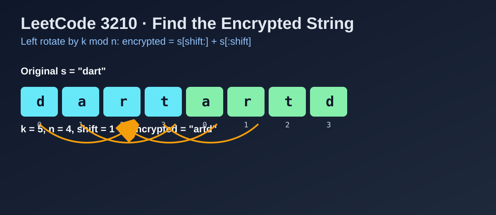

LeetCode 3210: Find the Encrypted String (Modulo Rotation)
LeetCode 3210StringRotationToday we solve LeetCode 3210 - Find the Encrypted String.
Source: https://leetcode.com/problems/find-the-encrypted-string/

English
Problem Summary
Given a string s and an integer k, build a new string where character s[i] moves to index (i + n - (k mod n)) mod n. This is equivalent to rotating s left by k mod n positions.
Key Insight
Rotating by n positions returns the same string, so only k mod n matters. Once we compute shift = k mod n, the answer is exactly:
s[shift:] + s[:shift]
Algorithm
- Let n = s.length.
- Compute shift = k % n.
- Return concatenation of suffix and prefix: s.substring(shift) + s.substring(0, shift).
Complexity Analysis
Time: O(n) (constructing result string).
Space: O(n) (output string).
Common Pitfalls
- Forgetting modulo when k > n.
- Using right rotation formula by mistake.
- Missing edge case when shift = 0 (answer is original string).
Reference Implementations (Java / Go / C++ / Python / JavaScript)
class Solution {
public String getEncryptedString(String s, int k) {
int n = s.length();
int shift = k % n;
return s.substring(shift) + s.substring(0, shift);
}
}func getEncryptedString(s string, k int) string {
n := len(s)
shift := k % n
return s[shift:] + s[:shift]
}class Solution {
public:
string getEncryptedString(string s, int k) {
int n = (int)s.size();
int shift = k % n;
return s.substr(shift) + s.substr(0, shift);
}
};class Solution:
def getEncryptedString(self, s: str, k: int) -> str:
n = len(s)
shift = k % n
return s[shift:] + s[:shift]var getEncryptedString = function(s, k) {
const n = s.length;
const shift = k % n;
return s.slice(shift) + s.slice(0, shift);
};中文
题目概述
给定字符串 s 和整数 k，加密后的字符串等价于把 s 向左循环移动 k 位（超出长度部分回到开头）。
核心思路
循环位移中每 n 次会回到原状，所以只需要处理 k mod n。设 shift = k % n，答案直接是：
s[shift:] + s[:shift]
算法步骤
- 计算 n = s.length。
- 计算 shift = k % n。
- 返回 s 的后半段与前半段拼接结果。
复杂度分析
时间复杂度：O(n)。
空间复杂度：O(n)（结果字符串）。
常见陷阱
- 忘了先取模，导致 k 很大时错误。
- 把左移写成右移。
- 没处理 shift = 0 时应返回原串。
多语言参考实现（Java / Go / C++ / Python / JavaScript）
class Solution {
public String getEncryptedString(String s, int k) {
int n = s.length();
int shift = k % n;
return s.substring(shift) + s.substring(0, shift);
}
}func getEncryptedString(s string, k int) string {
n := len(s)
shift := k % n
return s[shift:] + s[:shift]
}class Solution {
public:
string getEncryptedString(string s, int k) {
int n = (int)s.size();
int shift = k % n;
return s.substr(shift) + s.substr(0, shift);
}
};class Solution:
def getEncryptedString(self, s: str, k: int) -> str:
n = len(s)
shift = k % n
return s[shift:] + s[:shift]var getEncryptedString = function(s, k) {
const n = s.length;
const shift = k % n;
return s.slice(shift) + s.slice(0, shift);
};
Comments